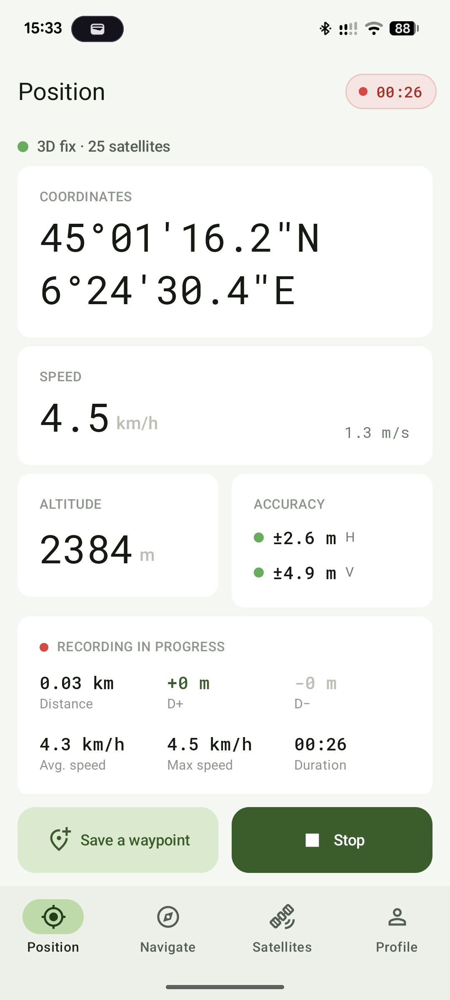
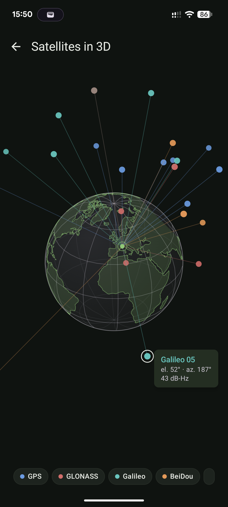
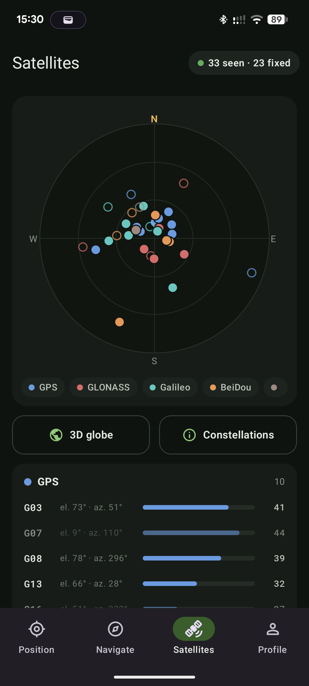
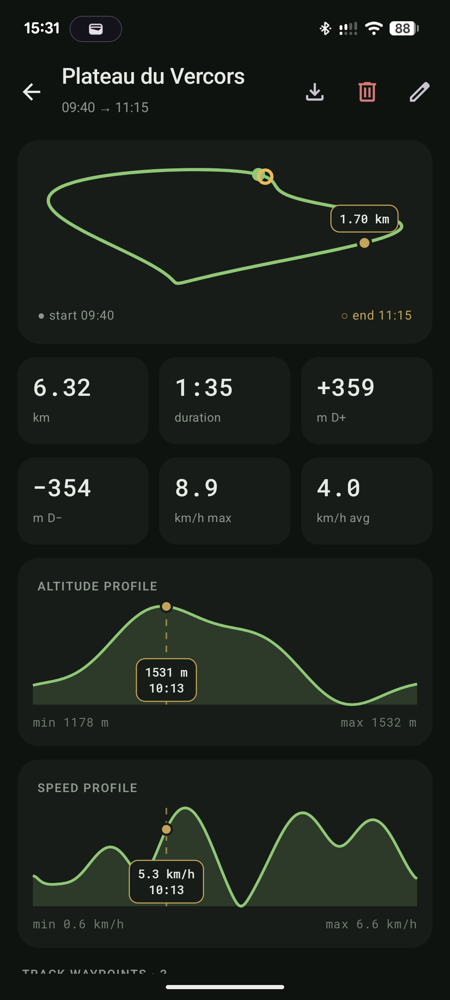
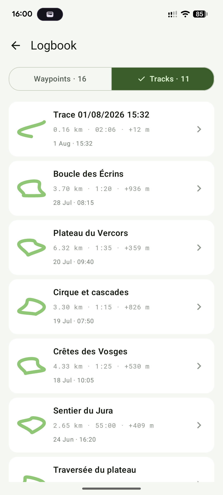
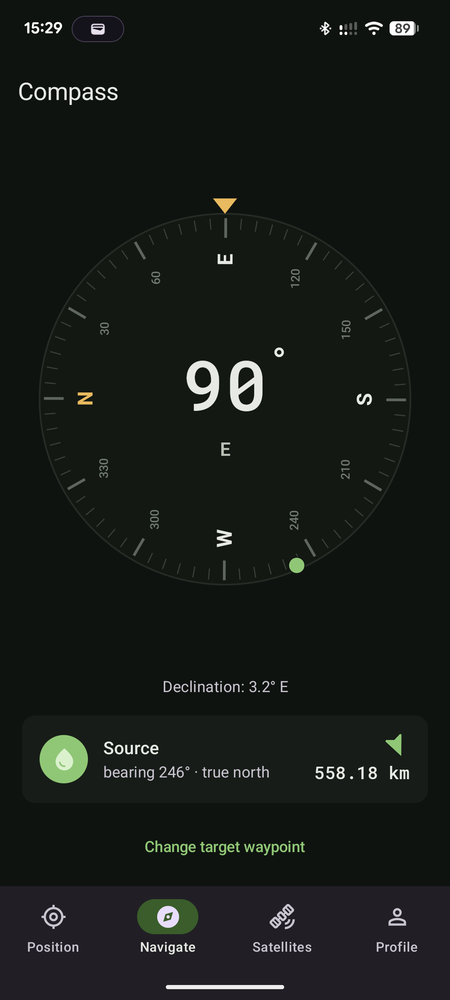
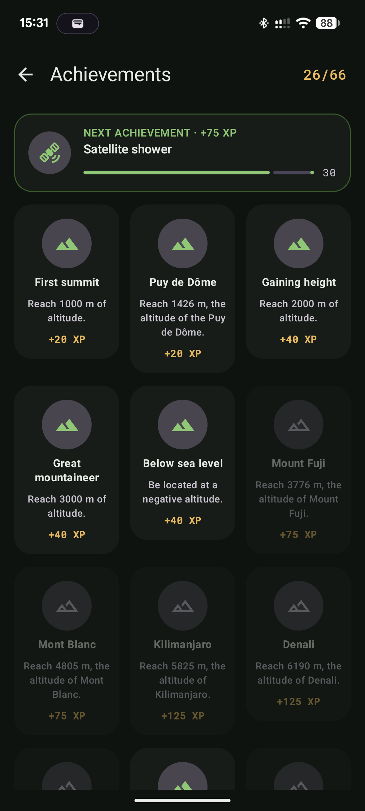

- constellations tracked
- 6
- achievements to unlock
- 66
- accounts, ads or trackers
- 0
- offline
- 100%

01 · Position
Know how much to trust your fix.
Decimal or DMS coordinates, EGM96 geoid-corrected altitude, speed in km/h and m/s. Horizontal and vertical accuracy are colour-coded so you can read them in bright sunlight.
- < 5 mprecise
- 5–15 mfair
- > 15 mdegraded


02 · Satellites
The sky, three ways.
GPS, GLONASS, Galileo, BeiDou, QZSS, IRNSS: see which satellites are locating you, where their signals come from and which ones are used in your fix.
- 013D globeThe real geometry of the constellation above you.
- 02Sky plotAzimuth and elevation of every satellite.
- 03Detailed listConstellation, signal strength, satellites used.


03 · Tracks & logbook
Pocket your phone, it keeps the track.
Recording carries on with the screen off: distance, duration, average and max speed, elevation gain and loss. Every outing lands in your logbook with altitude and speed profiles, waypoints and GPX export.

04 · Compass
Your heading, and the way to your waypoints.
Magnetic or true north, with locally computed declination. Pick a waypoint: an arrow, distance and bearing guide you there.

05 · Achievements
66 achievements to spice up your outings.
From your first summit to Kilimanjaro, from the 45th parallel to a waypoint saved before 6 am. Every achievement earns XP, and your personal records follow you from one outing to the next.
Privacy
Your tracks stay on your phone.
CairnGPS reads raw GPS through the Android APIs, with no Google Play Services, no Firebase and no tracking library. No account, no connection required. Read the privacy policy.
- Free software under the AGPL-3.0 licence
- No data sent anywhere, everything stays on the device
- Back up and restore everything in a single file
- Light and dark themes, readable in sunlight
Take the sky with you.
Free and open source, for Android 8.0 and up.
or download the APK on GitHub